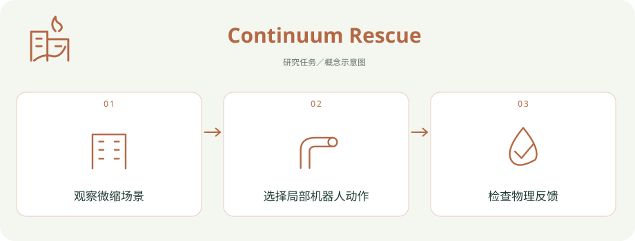
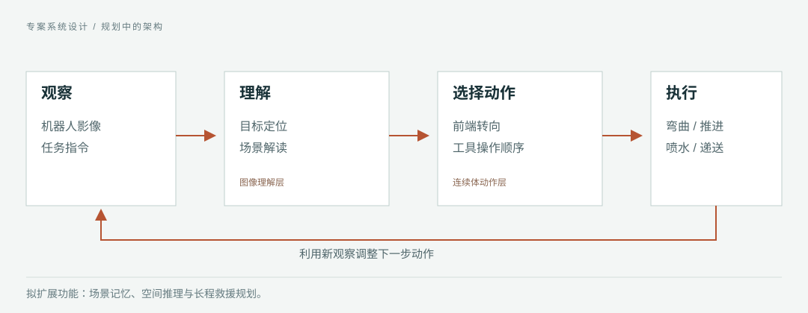
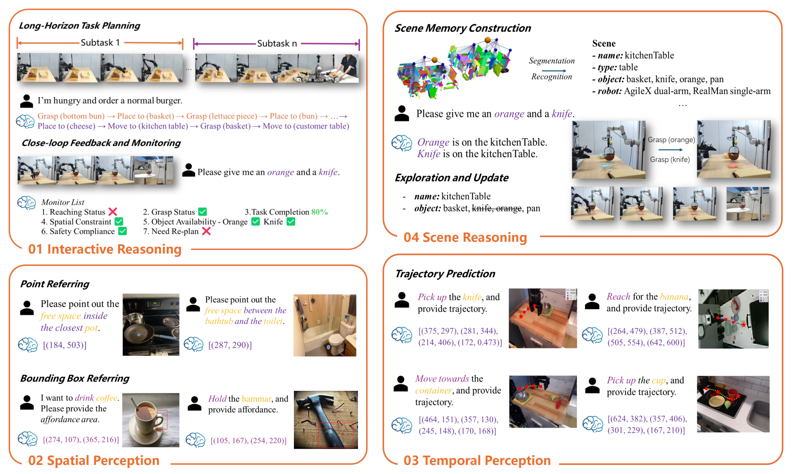
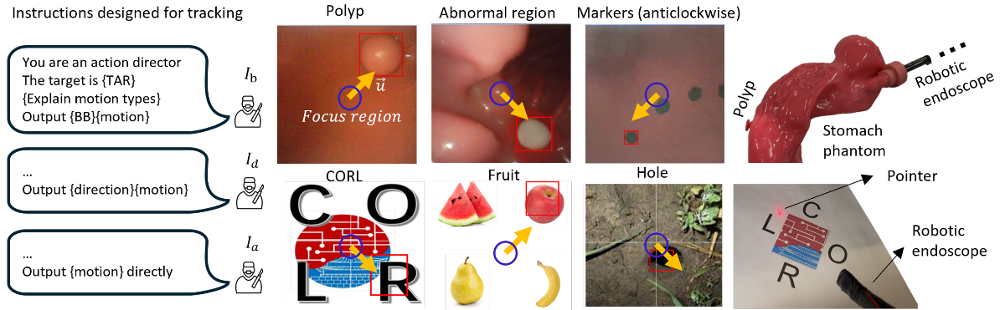
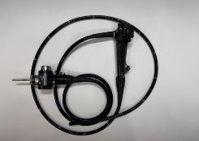
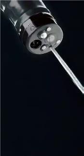

理解场景。
从机器人视角辨识任务目标与相关障碍物。设计亦考虑空间推理，以及先前观察提供的情境资讯。
RESEARCH PROJECT / 连续体机器人
面向受限空间救援任务的连续体机器人平台
转向目标、沿本体输送水流，再切换至物资运输。通过三类微缩建筑，观察完整任务流程。
三等奖 · 第十二届香港大学生创新及创业大赛，2026
高密度建筑中存在狭窄开口与视线遮挡。受内窥镜探查原理启发，本项目将可转向的连续体本体、机器人视角感知及作业通道结合，让观察与局部处置更接近难以触及的目标。
每个场景均提供机器人与外部视角，图注提示值得观察的行为。各段视频独立播放。
追踪室外目标，调整出口方向，最后停止喷水。
以上为微缩场景的定性演示。目标用于表示消防情境；视频不构成真实灭火、临床供氧或自主程度的量化证据。配对视频时长不同，采独立播放。
架构构想通过视觉反馈连接图像理解与连续体动作，描述观察如何引导目标定位、前端转向及工具操作。视频记录实际任务行为，但无法单独证明此架构已完成端到端自主实现。

从机器人视角辨识任务目标与相关障碍物。设计亦考虑空间推理，以及先前观察提供的情境资讯。
将任务连结至弯曲、推进、喷射方向及有序的物资运输，并利用新观察调整下一步动作。
RoboBrain 2.0为图像理解层提供研究基础。EndoVLA为柔性器械的视觉指令与动作提供研究基础。以上为相关研究。




前端设计可绕其轴线向各方向弯曲。本体将作业通道延伸至前端，让观察与处置共用同一平台。
以上依系统设计说明各通道功能，并非照片中各开口的逐一标识。
项目考虑整合建筑消防管道，以及室外消防平台的柔性前端。目前通过微缩场景探索这些任务构想。
三类建筑模型中的相机视角与实际任务行为，包括朝向目标的前端运动、喷水及物资运输。演示目标用于表示消防任务，并非真实火焰扑灭的证据。
受控试验、自主程度与操作员介入纪录、耐热及浓烟环境可靠性，以及实地部署。面罩运输不等于已验证氧气供给或医疗效果；此仓库尚未发布训练与控制程序。
本项目获得创新组三等奖，所属类别为数学及物理／机械及控制系统。香港中文大学官方获奖名单中的项目名称为 Exploring Continuum Robot Agents for Firefighting in Buildings。
香港中文大学研究记录列明获奖时间为 2026 年 5 月；校方活动报道指出，颁奖典礼于 2026 年 5 月 30 日举行。